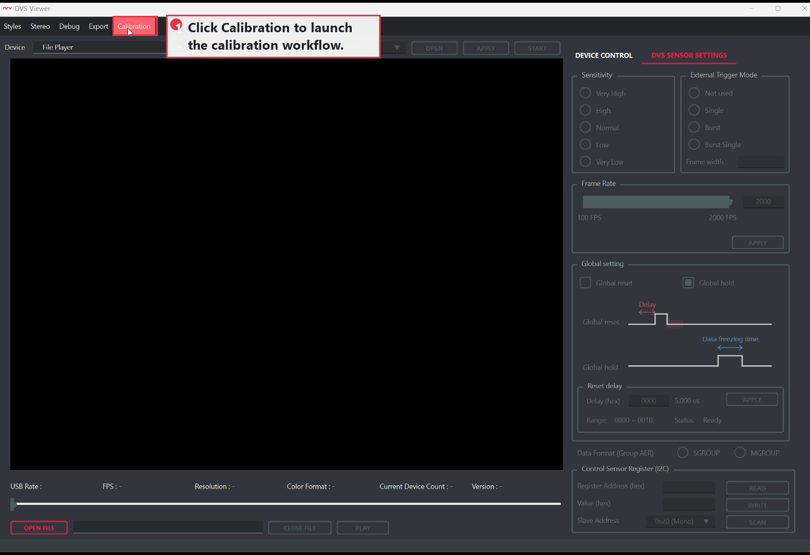
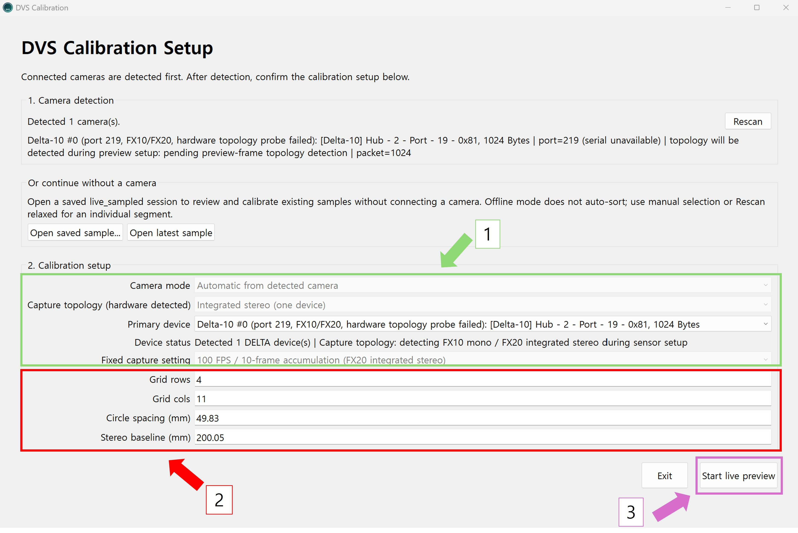
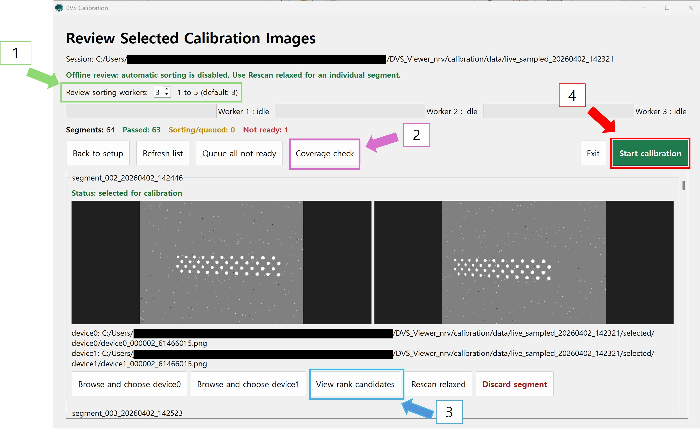
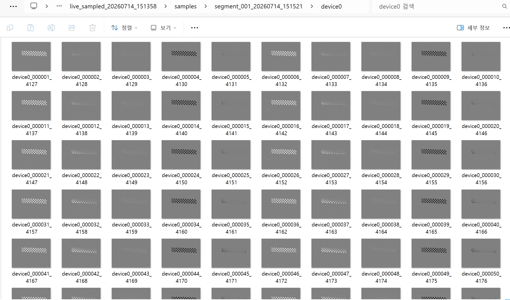
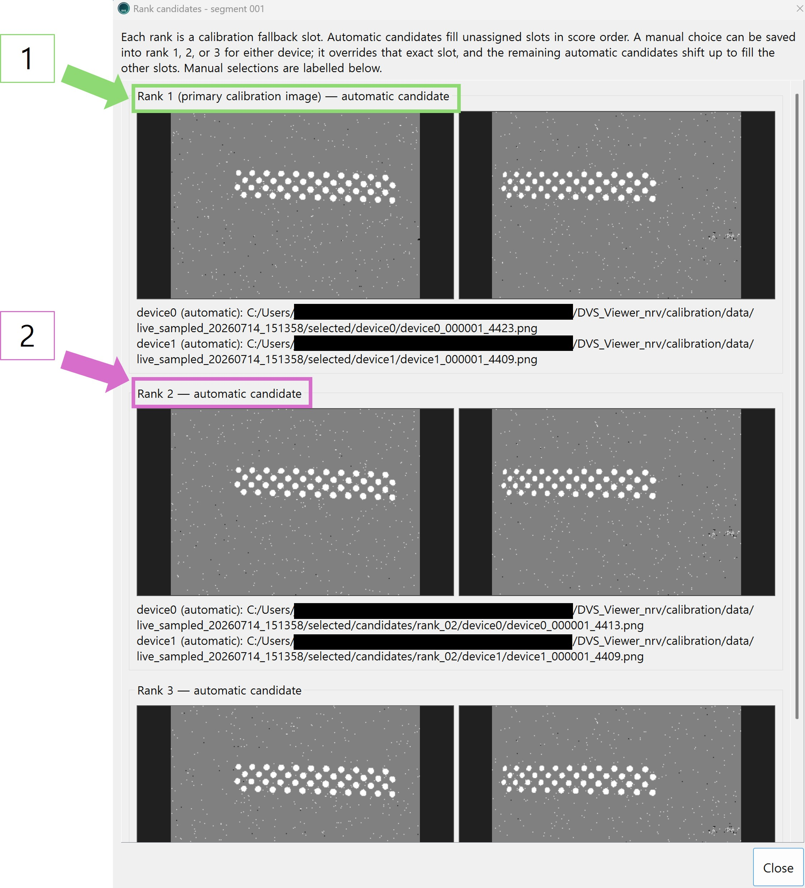
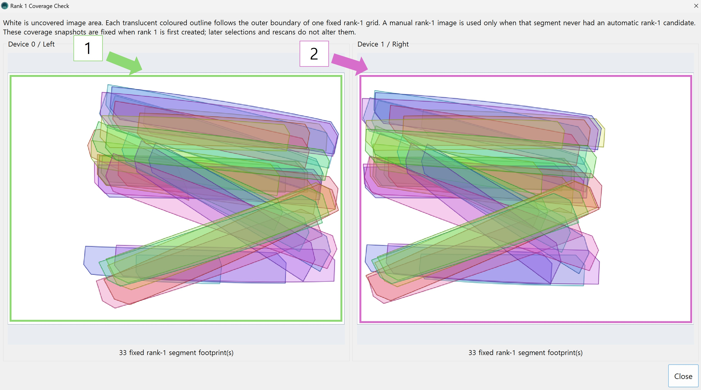
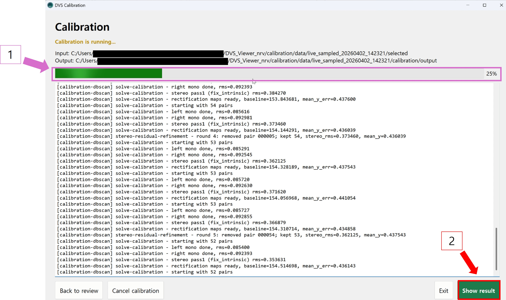
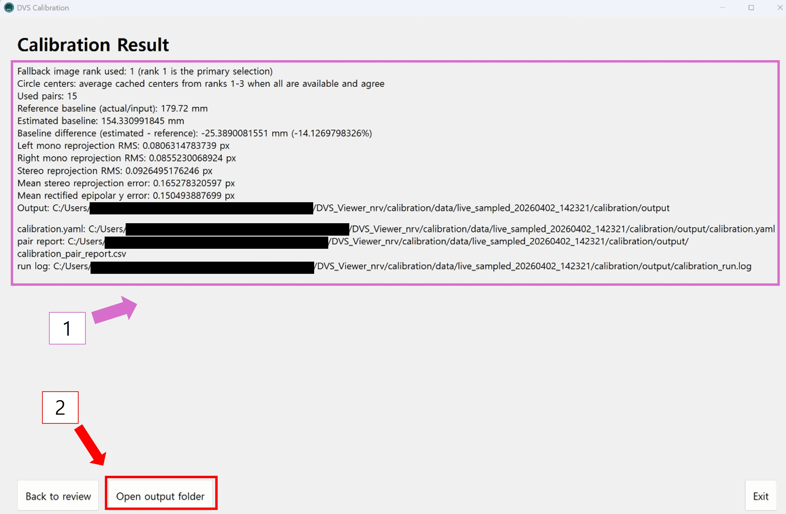

4. 캘리브레이션 촬영 및 처리 절차
이 장에서는 제가 직접 구현한 DVS Calibration 앱으로 실제 카메라 보정을 진행하는 방법을 설명합니다. 모니터의 원 그리드는 고정한 상태로 두고, 카메라와 고정된 삼각대를 옮겨 그리드가 화면의 여러 위치·거리·기울기로 보이도록 촬영합니다. 앱은 세그먼트마다 원 중심 후보를 찾고, 선택한 입력으로 모노 또는 스테레오 캘리브레이션 파라미터를 계산합니다.
4.1 Viewer에서 캘리브레이션 시작
DVS Viewer에서 카메라 연결을 확인한 뒤 Calibration을 누릅니다. Viewer가 종료되면 DVS Calibration 앱이 동일한 카메라 연결을 이어받아 사용합니다.

4.2 카메라 감지와 물리 치수 확인

2. 그리드 행·열 수, 실제 원 간격과 스테레오 기준 거리를 입력합니다.
3. 확인 후 Start live preview를 누릅니다.
카메라 종류와 모노·스테레오 구성은 연결된 장비를 기준으로 자동 결정됩니다. 촬영은 모든 카메라에서 100 FPS, 10프레임 누적으로 동작하므로 FPS와 누적 수를 별도로 설정하지 않습니다. 3장에서 측정한 원 간격(circle spacing)과 카메라 기준점 사이의 거리를 입력하고, 감지 결과가 실제 연결과 다를 때만 Rescan을 사용합니다.
4.3 Live Preview에서 여러 자세 기록

Preview는 10 FPS로 표시되므로 움직일 때 다소 끊겨 보일 수 있습니다. 카메라 오류나 PC 성능 저하가 아니라, 캘리브레이션용 화면을 낮은 표시 속도로 갱신하는 동작입니다. 원 그리드의 점이 모두 분리되어 보이는지, 주변에서 불필요한 이벤트가 과도하게 발생하는지를 확인하는 용도로 사용합니다.
세그먼트가 끝난 뒤 PNG 저장과 원 그리드 소팅은 백그라운드에서 계속 진행됩니다. 소팅이 끝날 때까지 기다리지 않고 다음 자세로 옮겨 바로 기록할 수 있습니다. Accepted pairs는 소팅 결과, 캘리브레이션 입력으로 사용할 수 있다고 판단한 기록 수입니다. 스테레오에서는 같은 세그먼트의 좌·우 관측이 모두 유효해야 한 쌍으로 인정됩니다.
각 자세는 약 5초 기록하고, 화면 위치·거리·기울기가 서로 다른 약 40개 세그먼트를 목표로 합니다. 키보드 S 또는 Start/Stop segment recording으로 기록을 시작하고 끝냅니다. REC가 켜진 동안에는 카메라와 고정된 삼각대를 움직이지 않습니다.
4.4 Review에서 입력 고르기

소팅은 한 세그먼트에 저장된 여러 깜빡임 시점의 이미지에서 유효한 그리드를 검출하고 점 순서를 확인한 뒤 점수화하는 사전 입력 처리입니다. 최대 세 후보를 Rank 1–3으로 자동 선택하며, 이 단계에서는 아직 보정값을 계산하지 않습니다.

Review에서는 PC 성능에 따라 1~5개의 세그먼트를 병렬로 소팅할 수 있고 기본값은 3개입니다. 자동 선택이 틀린 세그먼트만 Browse로 보완하고, 검출이 약한 경우에만 Rescan relaxed를 사용합니다.
4.5 Rank 후보 이해

세 후보가 모두 동일한 원 그리드를 담은 이미지로 확인되면 프로그램은 각 이미지에서 얻은 원 중심 좌표를 평균해 해당 자세의 중심 좌표를 안정화합니다. 자동 선택이 맞지 않으면 Browse로 원하는 이미지를 각 순위에 수동으로 넣을 수 있습니다.
4.6 Coverage Check로 촬영 범위 확인

Coverage Check는 촬영 데이터가 센서 화면을 충분히 덮었는지 보여 줍니다. 흰 영역이 넓으면 카메라와 고정된 삼각대를 옮겨 원 그리드가 그 위치에 보이도록 세그먼트를 더 촬영합니다. 스테레오는 좌·우 화면을 모두 확인해야 합니다.
4.7 계산 진행 확인

계산 중에는 선택 이미지와 카메라 구성을 바꾸지 않습니다. 오류가 발생하면 로그를 보관하고 Review로 돌아가 입력 선택부터 점검합니다.
4.8 결과 확인과 보관

실제 카메라 보정값을 적용할 때 사용하는 파일은 다음과 같습니다.
calibration.yaml
결과 폴더에는 계산에 사용한 이미지 쌍을 정리한 pair report CSV와
계산 과정 및 제외된 입력을 확인할 수 있는 run log도 저장됩니다. 동일한 조건을
다시 검토하려면 이 YAML을 만든 live_sampled_... 세션
폴더도 함께 보관합니다.
지원 카메라: DVS Calibration은 Delta-01 모노 카메라 1대 또는 2대, Delta-10 모노 카메라 1대 또는 2대와 Delta Stereo를 지원합니다. Delta Sigma 지원은 예정되어 있습니다.
이벤트 카메라와 다른 종류의 카메라 사이 상대 자세(pose)까지 함께 측정해야 하는 경우에는 이 절차를 바탕으로 필요한 연동 기능을 별도로 구성해야 합니다.
이 글은 제가 직접 구현한 NRV DVS 캘리브레이션 기능을 기준으로 작성한 한글 문서입니다.